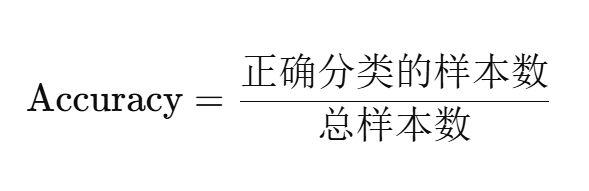
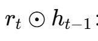
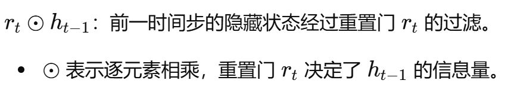
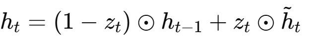
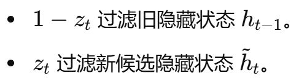
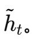
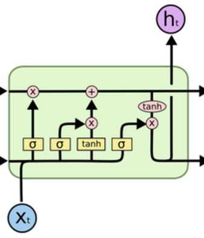

联合抽取方法分类为哪两种？
- 参数共享的联合模型，级联的方式
- 联合解码的联合模型。
联合抽取方法 里面的参数共享的联合模型，有什么特点？【编码的层面以及损失函数的层面】
不同的任务共享同一个bert编码器层。不同任务有各自的损失函数，相加得到总的损失函数，利用总的损失函数来进行参数更新。
主体、客体和关系的抽取任务在同一模型中进行，通常共享底层的表示（如 BERT 的隐藏层）。
每个任务有独立的损失函数，整个模型的总损失是各个任务损失的加权和。
联合抽取方法 里面的联合解码的联合模型，联合解码有什么特点？输出结果有什么特点？
实体识别和关于抽取这两个任务，它们的解码过程是统一的，同时进行的。以及这两个任务的输出的结果是在同一层次上完成输出直接形成完整的三元组。
主体、客体和关系的抽取任务通过一个统一的解码过程同时完成，所有任务的抽取在同一时间步或同一层次上进行，输出直接形成完整的 SPO（三元组）结构。
联合抽取方法分类为两种，参数共享的联合模型 以及 联合解码的联合模型。CasRel 属于哪一种？
CasRel 属于 参数共享的联合模型。
CasRel 使用同一个 什么来生成输入文本的上下文表示，这为实体识别和关系抽取提供了什么？
BERT 编码器，共享的语义信息。
CasRel 里面 主体和客体的识别以及关系的预测都基于同一个什么，这意味着这些任务怎么样 底层的特征表示。
同一个 BERT 输出的隐藏状态，共享底层的特征表示。
CasRel 在预测过程中采用了级联的方式，这里如何理解“级联”？
级联代表着预测的顺序关系。先识别主体，再基于主体识别客体及关系。
参数共享的联合模型的定义是什么？【他们共享什么，但有独立的什么？】
他们共享编码器，相同的语义表示，但是呢不同任务有独立的损失函数。
不同任务共享参数但有独立的任务目标。
CasRel 各个阶段是否有独立的损失函数？分别是哪些阶段？以及后续是如何处理的？
每个预测阶段（主体、客体、关系）都有独立的损失函数，
预测主体起止位置，客体起止位置以及对应关系类别。
整个模型的总损失是这些独立损失的加权和。
CasRel 是一个联合模型，又具有级联的特性。如何理解这里的“联合训练” 和 “ 级联预测” 呢？
联合训练指的是这两个任务，实体识别和关系收取这两个任务。训练过程中是联合的，也就是他们共享了编码器以及使用共同的损失函数。
级联预测表示在预测过程，也就是前沿传播过程中，他们存在先后关系，有先后顺序。
联合训练：CasRel 的所有任务在同一个训练过程中进行优化，实体识别和关系抽取共享相同的编码器和特征表示。级联预测：在预测过程中，CasRel 通过级联步骤（先主体，再客体和关系）来提高抽取的准确性。分阶段的预测方式。
CasRel 是一个联合模型，如何理解“联合”的意思呢？
联合指的是多个任务一起。多个任务一起共享模型底层的参数以及一起被训练。
联合训练：CasRel 的所有任务在同一个训练过程中进行优化，实体识别和关系抽取共享相同的编码器和特征表示。
CasRel 模型 具有级联 的性质，如何理解“级联 ”的意思呢？
级联预测：在预测过程中，CasRel 通过级联步骤（先主体，再客体和关系）来提高抽取的准确性。分阶段的预测方式。
CasRel 通过为每个任务设定 独立的什么，并将其怎么样来实现了多任务的联合训练。
为每个任务设定独立的损失函数，并将其综合到总损失中。
CasRel 是一个参数共享的联合模型，这里的“联合” 指的是 目前在哪个阶段？
模型最后参数被更新的阶段。
训练和优化这两个阶段，
实体识别和关系抽取任务的联合训练和优化。
相比于管道模型，联合模型的核心在于哪两个方面？
任务间的参数共享和使用一个共同的总的损失函数。
CasRel 的级联特性指的是什么？【指的是哪个阶段？】
级联只是预测顺序上的选择。
CasRel 的名字来自哪里？从名字上可以看出什么功能？
Cascade Binary Tagging for Relation Extraction with Label Dependencies，
级联的关系抽取模型。
Cascade Binary Tagging for Relation Extraction
中文名称是什么？
级联的二进制标记方法来实现关系提取。
CasRel 在哪个模型的基础上添加了什么来进行不同任务的预测？
模型基于 BERT，在其基础上添加了多个线性层来进行不同任务的预测。
联合模型（Joint Model） 字面意思是通常指的是什么？【在同一个框架下怎么样？】
联合模型（Joint Model） 通常指的是在同一框架下同时处理多个相关任务，使得这些任务之间可以相互影响和优化。
多个预测任务在同一模型中进行训练。这样的模型叫做什么模型？
联合模型（Joint Model）
CasRel 模型的工作流程里面，哪些层是并行的？
- 主体起始位置预测层和主体结束位置预测层，这两个层是并行且独立，
- 然后客体起始位置预测层和客体结束位置预测层，这两个层是并行且独立。
CasRel 模型 的英文名称包含Cascade Binary Tagging，意思是 级联二进制标记，级联 和 二进制标记 分别是什么意思？
级联表示两个阶段是有先后顺序的。二进制标记表示的是各个位置的预测，是一个2分类问题。
级联（Cascade）：两个阶段是具有先后顺序。模型先识别主体实体，然后基于已识别的主体实体，进一步识别客体实体及其关系。二进制标记（Binary Tagging）：每个位置的预测变成一个二分类的问题。每个标注任务被视为独立的二分类问题，例如判断某个位置是否为实体的起始或结束位置。
CasRel 模型的级联二进制标记，英文名称是什么？
Cascade Binary Tagging。
CasRel 模型的级联二进制标记，意味着 实体或关系的识别被视为一个二分类问题，这是什么意思？【也就是判定特定位置是否是什么？】
即某个特定位置是否为实体的起始或结束位置。
若一个模型包含4个线性层，且这4个线性层并行同步运行，那么该模型究竟属于单层网络还是4层网络呢？以及为什么？
被视为一个单层网络。因为数据只经过了一层并行的线性变换。因为层数反映的是数据在网络中被逐层处理的深度。
常见的并行结构是多头注意力机制（Multi-Head Attention），其中多个注意力头并行处理输入，然后将结果合并。内部有多个并行的计算单元。这种结构被认为是一个多个还是单个注意力层？
单一的注意力层。
模型包含4个线性层，这4个线性层是并行同步运行的。这意味着什么？【输入怎么样？每个层是什么操作？最终的结果怎么样？】
输入同时进入这4个线性层。每个线性层独立进行线性变换。最终将这4个输出合并，可能通过拼接、加和等方式。
dbms.security.auth_enabled=false 这一行配置项的作用是什么？
禁用 Neo4j 的身份验证。
在 Neo4j 中，默认启用身份验证，也就是什么时候需要提供用户名和密码。
即每次连接时。
dbms.security.auth_enabled=false 存在哪个文件中？
neo4j.conf。
dbms.security.auth_enabled=false 这个配置的好处是什么？
可以在没有输入用户名和密码的情况下连接到数据库。
7474 和 7687，分别是哪个协议的端口？
7474 是 Neo4j 的 HTTP 协议端口，而不是 Bolt 协议端口。Bolt 协议 默认使用的是 7687 端口。
python代码里面通过哪个库来连接 Neo4j？
py2neo 。
bolt://：这是 什么意思？
Neo4j 提供的一种高效的二进制协议，用于客户端和 Neo4j 之间的通信，称为 Bolt协议。它用于快速、低延迟的数据库操作，特别适合大规模的数据库查询和事务。
Bolt 协议 (bolt://) 和 HTTP 协议 (http://) 这两个协议用途的区别是什么？
Bolt 协议 (bolt://) 是一种二进制协议，专为高效的数据库交互设计，通常用于编程接口和客户端库。HTTP 协议 (http://) 是用于通过 Web 浏览器访问 Neo4j 浏览器界面的协议（默认端口是 7474）。
py2neo 是否支持直接通过 HTTP 协议进行连接Neo4j 。
不支持，仅支持 Bolt 协议。
在 Neo4j 浏览器中，如果你想一次性删除所有的记录（包括节点和关系），可以执行什么 Cypher 查询语句？
MATCH (n)
DETACH DELETE n
MATCH (n)
DETACH DELETE n
上面的Cypher 查询语句，分别是什么 意思？
MATCH (n)：匹配数据库中的所有节点。DETACH DELETE n：删除所有节点，并且同时删除这些节点之间的关系（DETACH 确保相关联的关系也被删除）。
在终端（命令提示符或 PowerShell）启动 Neo4j，使用什么命令？
neo4j.bat console
IV的作用 是什么？【这个值越大表示这个特征的什么能力越强。】
对目标变量的区分能力以及预测能力越强。
衡量了整个特征对目标变量的区分能力，IV值越大，特征的预测能力越强。
多分类问题中最常用的评估指标，尤其是在类别分布平衡的情况下，是什么？
准确度（Accuracy）
准确度（Accuracy）计算公式是什么？

Part-of-Speech Tagging, POS Tagging
jieba 分词里面的
精确模式、全模式和搜索引擎模式的区别
- 精确模式：输出是唯一的，没有重复词，也不会刻意把一个长词再切分成短词。
- 全模式和搜索引擎模式：都包含重复词。
- 全模式：穷尽句子中的所有词语组合，导致重复率较高。
- 搜索引擎模式：在精确模式基础上增加长词的细分。
在GRU里面，下面公式中间的圈是什么意思？以及整体的功能是什么？


在GRU里面，1 - z_t 和 z_t 分别过滤什么信息？
分别是旧信息，上个隐藏状态
以及新信息，当前候选状态。


在GRU里面，
最终的隐藏状态h_t是谁和谁的加权融合？
新旧信息的加权融合，新信息就是新的候选状态，旧信息就是上一个隐藏状态。
GRU 的完整数据流程包括哪三个关键步骤？
计算两个门的值（z_t 和 r_t）。生成当前时间步的候选隐藏状态 。更新隐藏状态 h_t。

在 LSTM 中，
输出门（output gate）的功能是什么？【决定了哪里的信息传递到哪。】
输出门（output gate）决定了细胞状态中的信息有多少需要传递给隐藏状态，也就是决定隐藏状态的值。
collate_fn 应返回什么样的数据？【返回的数据的格式以及参数名称。】
返回的格式是具有两个元素的元组，而第一个元素又是一个三个元素的元组。
((batched_x, batched_seq_len, batched_mask), batched_y)
- 使用 pathlib 来确保路径存在
- 使用动态生成的时间戳作为模型名称
使用这两种方式来优化下面代码。
torch.save(ba_model.state_dict(), './save_model/20230228_new_model_%d.bin' % epoch)
# 生成当前的时间戳
timestamp = datetime.now().strftime('%Y%m%d_%H%M%S')
# 定义保存模型的目录
save_path = Path('./save_model')
save_path.mkdir(parents=True, exist_ok=True)
# 保存模型
torch.save(ba_model.state_dict(), save_path/ f"{timestamp}.bin)
如何在模型中处理 EPO 问题
对于 EPO 问题，可以将关系抽取任务视为多标签多分类问题，使模型能够为同一实体对预测多个关系。
如何在模型中处理 SEO 问题?
对于 SEO 问题，可以为每个实体对设计独立的分类器，或者使用共享层和专用层结合的架构，以区分不同实体对中的关系。
nn.Embedding(..., ...) 初始化一个嵌入矩阵
里面的两个参数名称是什么？
(vocab_size, embedding_dim)
注意力机制（Attention Mechanism）
作用是使模型能够在处理序列数据时，能够怎么样？
【能够动态怎么样？提升模型的什么能力？】
动态地关注输入序列中的不同部分。提升模型对重要信息的捕捉能力，增强上下文理解。
inner_obj_heads 和 inner_obj_tails 的维度是 什么样的？【是二维的，行数和列数分别和什么相等？】
[序列长度, 关系类别数].
inner_obj_heads 和 inner_obj_tails,数据格式是存放0,1 二值的二维矩阵。
每个位置的0,1 表示什么意思？【什么类别下的什么位置？】
特定关系类别下的起止位置。
从输入句子，到Token Embedding，Position Embedding。整体的数据流转过程是什么样？【4个步骤】
1 原始文本序列经过tokenizer处理以后变成id序列。
2 ID序列里面的每个ID经过embedding 层后得到对应的嵌入词向量。
3 每个位置索引经过嵌入以后得到位置向量。
4 词向量和每个对应的位置向量相加以后得到结果。
步骤1：Tokenization
- 输入句子被分割成 tokens，并转换为
input_ids。
步骤2：Token Embedding
- 每个
input_id 被转换为一个嵌入向量，形成 token_embeddings 矩阵。
步骤3：Position Embedding
- 每个 token 的位置索引 形成
position_embeddings 矩阵。
步骤4：相加操作
- 将
token_embeddings 和 position_embeddings 相加，得到结合了词汇和位置信息的最终输入表示。
def create_label(inner_triples, inner_input_ids, seq_len):
代码里面，这三个参数分别是什么意思？
包含SPO三元组的列表。词汇表里面的ID序列。序列的长度。
- inner_triples: 包含多个SPO三元组的列表，每个三元组包含 subject、predicate、object。
- inner_input_ids: 各个token在词汇表里面对应的ID位置序号。
- seq_len: 序列长度。
inner_triples 是一个包含多个SPO三元组的列表，后续用它来构建什么？
遍历 inner_triples 并构建 s2ro_map。
inner_triples 是一个包含多个SPO三元组的列表，首先对其遍历，拿到单个的三元组之后，然后是什么阶段？【是什么阶段以及三元组里面哪些值分别通过什么？转换成什么？】
编码阶段，
- 将 subject 和 object 通过 tokenizer 转换为 input_ids。
- 将predicate 通过字典的映射，转换为对应的关系ID。
处理的流程是什么？【从原始的输入文本到用于训练的标签张量】
- 输入：句子经过tokenizer处理，得到 input_ids。
- 遍历SPO三元组：对每个SPO三元组，找到主体和客体实体在 input_ids 中的起始索引。
- 构建 s2ro_map：s2ro_map 记录了每个主体实体所关联的所有客体实体及其关系类别。
- 填充标签：关于主体的话有四个，sub_head, sub_tail, sub_head2tail, sub_len，关于客体的话有两个obj_head, obj_tail。
- 输出：返回用于训练的多个标签张量，涵盖主体实体的位置、跨度、长度，以及客体实体的位置和关系类别。
假设我们有以下句子和SPO三元组，经过tokenizer处理后的 input_ids 和位置索引应该是什么样的？
句子: "Alice works at OpenAI and studies at MIT."
SPO三元组:
1. {'subject': 'Alice', 'predicate': 'works_at', 'object': 'OpenAI'}
2. {'subject': 'Alice', 'predicate': 'studies_at', 'object': 'MIT'}
input_ids = [101, 1001, 2003, 2000, 2001, 2004, 2005, 2006, 2007, 102]
# 对应的tokens: ["[CLS]", "Alice", "works", "at", "OpenAI", "and", "studies", "at", "MIT", "[SEP]"]
# 位置索引: [0, 1, 2, 3, 4, 5, 6, 7, 8, 9]
使用inner_sub_head2tail 0,1 二值的一维张量，来标记主体实体的跨度。【代码】
inner_sub_head2tail[sub_head_idx: sub_tail_idx + 1] = 1
EPO 问题为什么被视为多标签多分类任务，使用什么激活函数以及损失函数？
以及为什么？
Entity pair overlap意味着同一实体对之间存在多个关系标签。也就是对于单个实体对而言，他属于是多标签，多分类。
sigmoid + BCE loss。
多标签多分类任务通常会被视为2分类任务，所以的话它对应的是sigmoid和2元交叉熵损失。
[json.loads(line) for line in open(data_path, encoding='utf-8')]
这个写法，虽然技术上可行，但不推荐，这是为什么呢？
因为缺乏资源管理，可能导致文件未关闭的问题。
heads = torch.arange(0, len(pred_sub_heads), device='cpu')[pred_sub_heads == 1]
代码执行的两个阶段是什么？
- 生成位置索引 [0, 1, 2, 3, 4, 5, 6, 7, 8, 9]，
- pred_sub_heads == 1 得到布尔张量来 筛选出 的位置索引，得到 heads 。
extract_sub 这个函数输出的变量的名称是什么以及他的格式是什么？
subs，
类似于[(0, 8), (6, 9)]，包含多个二元元组的列表。
BERT 模型 主要输出参数是pooler_output ，通常是 哪个token的向量经过哪两个步骤之后的结果，用作表示什么？
[CLS] token 的向量，一个全连接层和 Tanh 激活函数后，用于句子级别的表示（即句向量）。
BERT 模型 主要输出参数是last_hidden_state，包含什么信息？
每个token的词向量。
每个 token 的上下文相关向量表示（即词向量）。
Tokenizer 的输出结果输入到模型之后，来到bert模型里面的Transformer编码器，处理什么数据，生成什么数据。
处理输入嵌入，生成隐藏状态（hidden states）。
联合抽取方法分类为哪两种？
- 参数共享的联合模型，级联的方式
- 联合解码的联合模型。
相比于管道模型，联合模型的核心在于哪两个方面？
任务间的参数共享和使用一个共同的总的损失函数。